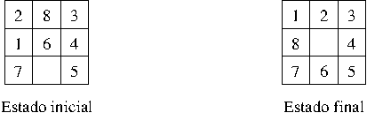
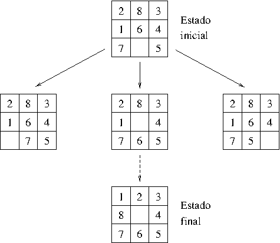
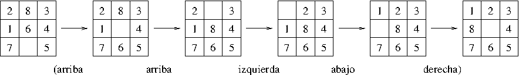
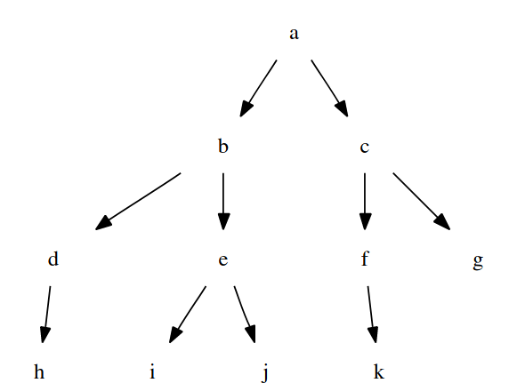
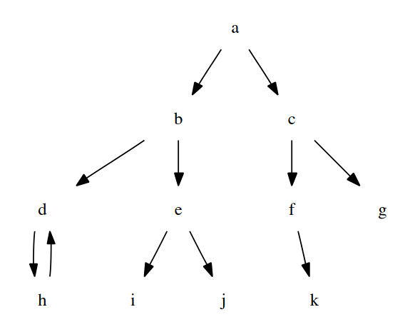
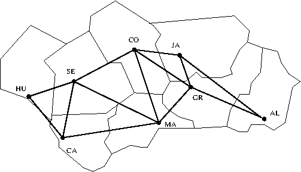

Tema 8: Resolución de problemas de espacios de estados
Índice
- 1. Ejemplo de problema mediante espacios de estados: el 8 puzzle
- 2. Búsqueda en profundidad sin ciclos
- 3. Búsqueda en profundidad con ciclos
- 3.1. El problema del grafo
- 3.2. No solución del problema del grafo mediante búsqueda en profundidad sin ciclos
- 3.3. Procedimiento de búsqueda en profundidad con ciclos
- 3.4. Solución del problema del grafo mediante búsqueda en profundidad con ciclos
- 3.5. El problema de las jarras
- 3.6. Solución del problema de las jarras por búsqueda en profundidad con ciclos
- 4. Búsqueda en anchura: Problema del paseo
- 5. Búsqueda óptima
- 5.1. Problema del viaje
- 5.2. Solución del problema del viaje mediante búsqueda en profundidad y en anchura
- 5.3. Primer procedimiento de búsqueda óptima
- 5.4. Solución del problema del viaje mediante búsqueda óptima
- 5.5. Segundo procedimiento de búsqueda óptima
- 5.6. Comparación de procedimientos de búsqueda óptima
- 6. Bibliografía
1. Ejemplo de problema mediante espacios de estados: el 8 puzzle
- Para el 8 puzzle se usa un cajón cuadrado en el que hay situados 8
bloques cuadrados. El cuadrado restante está sin rellenar. Cada
bloque tiene un número. Un bloque adyacente al hueco puede deslizarse
hacia él. El juego consiste en transformar la posición inicial en la
posición final mediante el deslizamiento de los bloques. En
particular, consideramos el estado inicial y final siguientes:
 - Ejemplos de movimientos
 - Solución del 8–puzzle:
 - Representación:
- Estado inicial:
[[2,8,3],[1,6,4],[7,h,5]] - Estado final:
[[1,2,3],[8,h,4],[7,6,5]] - Operadores:
- Mover el hueco a la izquierda
- Mover el hueco arriba
- Mover el hueco a la derecha
- Mover el hueco abajo
- Estado inicial:
- Número de estados = 9! = 362.880.
2. Búsqueda en profundidad sin ciclos
2.1. El problema del árbol
2.1.1. Descripción del problema del árbol
- El problema del árbol consiste en encontrar caminos en
el siguiente grafo
 desdeahastafoj.
2.1.2. Representación del problema del árbol
- El problema se representa mediante las relaciones
estado_inicial/1,estado_final/1ysucesor/2definidas a continuación. estado_inicial(?E)se verifica siEes el estado inicial.estado_inicial(a).
estado_final(?E)se verifica siEes un estado final.estado_final(f). estado_final(j).
sucesor(+E1,?E2)se verifica siE2es un sucesor del estadoE1.sucesor(a,b). sucesor(a,c). sucesor(b,d). sucesor(b,e). sucesor(c,f). sucesor(c,g). sucesor(d,h). sucesor(e,i). sucesor(e,j). sucesor(f,k).
- El código del problema del árbol se encuentra en p_arbol.pl.
2.2. Procedimiento de búsqueda en profundidad sin ciclos
profundidad_sin_ciclos(?S)se verifica siSes una solución del problema mediante búsqueda en profundidad sin ciclos. Por ejemplo, Su definición esprofundidad_sin_ciclos(S) :- estado_inicial(E), profundidad_sin_ciclos(E,S). % profundidad_sin_ciclos(+E,?S) se verifica si S es una solución por % búsqueda en profundidad sin ciclos a partir de E; es decir, según el % siguiente procedimiento: % 1. S = [E]. es una solución si E es un estado final. % 2. S = [E|S1] es una solución si existe un E tal que % 2.1. E1 es un sucesor de E % 2.2. S1 es una solución por búsqueda en profundidad sin ciclos a partir de % E1. profundidad_sin_ciclos(E,[E]) :- estado_final(E). % 1 profundidad_sin_ciclos(E,[E|S1]) :- % 2 sucesor(E,E1), % 2.1 profundidad_sin_ciclos(E1,S1). % 2.2
- El código de la búsqueda en profundidad sin ciclos se encuentra en
2.3. Solución del problema del árbol mediante búsqueda en profundidad sin ciclos
La solución es
?- [p_arbol, b_profundidad_sin_ciclos]. true ?- profundidad_sin_ciclos(S). S = [a, b, e, j] ?- trace(estado_final,+call). estado_final/1: [call] true. ?- profundidad_sin_ciclos(S). T Call: estado_final(a) T Call: estado_final(b) T Call: estado_final(d) T Call: estado_final(h) T Call: estado_final(e) T Call: estado_final(i) T Call: estado_final(j) S = [a, b, e, j] ?- trace(estado_final,-call). % estado_final/1: Not tracing true.
2.4. El problema de las 4 reinas
2.4.1. Descripción del problema de las 4 reinas
- El problema de las 4 reinas consiste en colocar 4 reinas en un tablero rectangular de dimensiones 4 por 4 de forma que no se encuentren más de una en la misma línea: horizontal, vertical o diagonal.
- Los estados son listas de números que representan las ordenadas de las reinas colocadas. Por ejemplo, [3,1] representa que se ha colocado las reinas (1,1) y (2,3).
2.4.2. Representación del problema de las 4 reinas
- El problema se representa mediante las relaciones
estado_inicial/1,estado_final/1ysucesor/2definidas a continuación. estado_inicial(?E)se verifica siEes el estado inicial.estado_inicial([]).
estado_final(?E)se verifica siEes un estado final.estado_final(E) :- length(E,4).
sucesor(+E1,?E2)se verifica siE2es un sucesor del estadoE1.sucesor(E,[Y|E]) :- member(Y,[1,2,3,4]), not(member(Y,E)), no_ataca(Y,E).
no_ataca(Y,E)se verifica siE=[Yn,...,Y1], entonces la reina colocada en(n+1,Y)no ataca a las colocadas en(1,Y1), …,(n,Yn).
no_ataca(Y,E) :- no_ataca(Y,E,1). no_ataca(_,[],_). no_ataca(Y,[Y1|L],D) :- Y1-Y =\= D, Y-Y1 =\= D, D1 is D+1, no_ataca(Y,L,D1).
- El código del problema de las 4 reinas se encuentra en p_4_reinas.pl.
2.5. Solución del problema de las 4 reinas por búsqueda en profundidad sin ciclos.
La solución es
?- [p_4_reinas, b_profundidad_sin_ciclos]. true. ?- profundidad_sin_ciclos(S). S = [[], [2], [4, 2], [1, 4, 2], [3, 1, 4, 2]]
3. Búsqueda en profundidad con ciclos
3.1. El problema del grafo
3.1.1. Descripción del problema del grafo
- El problema del grafo consiste en encontrar caminos en el siguiente
grafo
 desdeahastafoj.
3.1.2. Representación del problema del grafo
- El problema se representa mediante las relaciones
estado_inicial/1,estado_final/1ysucesor/2definidas a continuación. estado_inicial(?E)se verifica siEes el estado inicial.estado_inicial(a).
estado_final(?E)se verifica siEes un estado final.estado_final(f). estado_final(j).
sucesor(+E1,?E2)se verifica siE2es un sucesor del estadoE1.sucesor(a,b). sucesor(a,c). sucesor(b,d). sucesor(b,e). sucesor(c,f). sucesor(c,g). sucesor(d,h). sucesor(e,i). sucesor(e,j). sucesor(f,k). sucesor(h,d).
- El código del problema del grafo se encuentra en p_grafo.pl.
3.2. No solución del problema del grafo mediante búsqueda en profundidad sin ciclos
El problema del grafo no se puede resolver mediante búsqueda en profundidad sin ciclos.
?- [p_grafo, b_profundidad_sin_ciclos]. true. ?- trace(estado_final,+call). true. ?- profundidad_sin_ciclos(S). T Call: estado_final(a) T Call: estado_final(b) T Call: estado_final(d) T Call: estado_final(h) T Call: estado_final(d) T Call: estado_final(h) ...
3.3. Procedimiento de búsqueda en profundidad con ciclos
- Un nodo es una lista de estados
[E(n), ... ,E(1)]de forma queE(1)es el estado inicial yE(i+1)es un sucesor deE(i). profundidad_con_ciclos(?S)se verifica siSes una solución del problema mediante búsqueda en profundidad con ciclos.
profundidad_con_ciclos(S) :- estado_inicial(E), profundidad_con_ciclos([E],S). % profundidad_con_ciclos(+N,?S) se verifica si S es una solución del % problema a partir del nodo N (es decir S=[E_1,...,E_m] donde % N=[E_j,E_(j-1),...,E_1] , E_n es un estado final y E_(i+1) es un % sucesor de Ei), encontrada por búsqueda en profundidad; es decir, % mediante el siguiente procedimiento: % 1. Si el primer elemento de N es un estado final, entonces S es la % inversa de N. % 2. Si N=[E|C] y E1 un sucesor de E que no ha sido visitado (es decir, % que no pertenece a C) y tal que existe una solución, S, a partir de % [E1,E|C]. profundidad_con_ciclos([E|C],S) :- estado_final(E), reverse([E|C],S). profundidad_con_ciclos([E|C],S) :- sucesor(E,E1), not(memberchk(E1,C)), profundidad_con_ciclos([E1,E|C],S).
- El código de la búsqueda en profundidad con ciclos se encuentra en b_profundidad_con_ciclos.pl.
3.4. Solución del problema del grafo mediante búsqueda en profundidad con ciclos
Solución
?- [p_grafo, b_profundidad_con_ciclos]. true. ?- profundidad_con_ciclos(S). S = [a, b, e, j] ; S = [a, c, f] ; false. ?- trace(estado_final,+call). % estado_final/1: [call] true. ?- profundidad_con_ciclos(S). T Call: estado_final(a) T Call: estado_final(b) T Call: estado_final(d) T Call: estado_final(h) T Call: estado_final(e) T Call: estado_final(i) T Call: estado_final(j) S = [a, b, e, j] ; T Call: estado_final(c) T Call: estado_final(f) S = [a, c, f] ; T Call: estado_final(k) T Call: estado_final(g) false.
3.5. El problema de las jarras
3.5.1. Descripción del problema de las jarras
En el problema de las jarras
- Se tienen dos jarras, una de 4 litros de capacidad y otra de 3.
- Ninguna de ellas tiene marcas de medición.
- Se tiene una bomba que permite llenar las jarras de agua.
- El problema consiste en averiguar cómo se puede lograr tener exactamente 2 litros de agua en la jarra de 4 litros de capacidad.
3.5.2. Representación del problema de las jarras
- El estado inicial es
0-0. estado_inicial(?E)se verifica siEes el estado inicial.estado_inicial(0-0).
- Los estados finales son de la forma
2-y estado_final(?E)se verifica siEes un estado final.estado_final(2-_).
- Los operadores:
- Llenar la jarra de 4 litros con la bomba.
- Llenar la jarra de 3 litros con la bomba.
- Vaciar la jarra de 4 litros en el suelo.
- Vaciar la jarra de 3 litros en el suelo.
- Llenar la jarra de 4 litros con la jarra de 3 litros.
- Llenar la jarra de 3 litros con la jarra de 4 litros.
- Vaciar la jarra de 3 litros en la jarra de 4 litros.
- Vaciar la jarra de 4 litros en la jarra de 3 litros.
sucesor(+E1,?E2)se verifica siE2es un sucesor del estadoE1.sucesor(X-Y,4-Y) :- X < 4. sucesor(X-Y,X-3) :- Y < 3. sucesor(X-Y,0-Y) :- X > 0. sucesor(X-Y,X-0) :- Y > 0. sucesor(X1-Y1,4-Y2) :- X1 < 4, T is X1+Y1, T >= 4, Y2 is Y1-(4-X1). sucesor(X1-Y1,X2-3) :- Y1 < 3, T is X1+Y1, T >= 3, X2 is X1-(3-Y1). sucesor(X1-Y1,X2-0) :- Y1 > 0, X2 is X1+Y1, X2 < 4. sucesor(X1-Y1,0-Y2) :- X1 > 0, Y2 is X1+Y1, Y2 < 3.
- El código del problema de las jarras se encuentra en p_jarras.pl.
3.6. Solución del problema de las jarras por búsqueda en profundidad con ciclos
Solución
?- [p_jarras, b_profundidad_con_ciclos]. true. ?- profundidad_con_ciclos(S). S = [0-0,4-0,4-3,0-3,3-0,3-3,4-2,0-2,2-0] ; S = [0-0,4-0,4-3,0-3,3-0,3-3,4-2,0-2,2-0,2-3] ; S = [0-0,4-0,1-3,4-3,0-3,3-0,3-3,4-2,0-2,2-0]
4. Búsqueda en anchura: Problema del paseo
4.1. El problema del paseo
4.1.1. Descripción del problema del paseo
- Una persona puede moverse en línea recta dando cada vez un paso hacia
la derecha o hacia la izquierda. Podemos representarlo mediante su
posición
X. El valor inicial deXes 0. El problema consiste en llegar a la posición -3.
4.1.2. Representación del problema del paseo
estado_inicial(?E)se verifica siEes el estado inicial.estado_inicial(0).
estado_final(?E)se verifica siEes un estado final.estado_final(-3).
sucesor(+E1,?E2)se verifica siE2es un sucesor del estadoE1.sucesor(E1,E2) :- E2 is E1+1. sucesor(E1,E2) :- E2 is E1-1.
- El código del problema del paseo se encuentra en p_paseo.pl.
4.2. No solución del problema del paseo mediante búsqueda en profundidad
El problema del paseo no se puede solucionar mediante búsqueda en profundidad con ciclos.
?- [p_paseo, b_profundidad_con_ciclos]. true. ?- trace(estado_final,+call). true. ?- profundidad_con_ciclos(S). T Call: estado_final(0) T Call: estado_final(1) T Call: estado_final(2) T Call: estado_final(3) T Call: estado_final(4) ...
4.3. Procedimiento de búsqueda en anchura
- Un nodo es una lista de estados
[E(n), ... , E(1)]de forma queE(1)es el estado inicial yE(i+1)es un sucesor deE(i). - Abiertos es la lista de nodos pendientes de analizar.
anchura(?S)se verifica siSes una solución del problema mediante búsqueda en anchura.anchura(S) :- estado_inicial(E), anchura([[E]],S). % anchura(+Abiertos,?S) se verifica si S es la solucion encontrada por % búsqueda en anchura a partir de la lista de Abiertos; es decir, % mediante el siguiente procedimiento: % 1. Si % 1.1. el primer elemento de Abiertos es [E|C] y % 1.2. E es un estado final, % entonces % 1.3 S es la inversa de [E|C]. % 2. Si % 2.1. Abiertos es la lista [[E|C]|R], % 2.2. la lista de los sucesores de E que no están en C ni en % Abiertos es Sucesores y % 2.3. los nuevos abiertos, NAbiertos, es la lista obtenida añadiendo % dichos Sucesores a continuación de R % entonces % 2.4. S es la solución obtenida por búsqueda en anchura con los % nuevos abiertos. anchura([[E|C]|_],S) :- % 1.1 estado_final(E), % 1.2 reverse([E|C],S). % 1.3 anchura([N|R],S) :- expande([N|R],Sucesores), % 2.2 append(R,Sucesores,NAbiertos), % 2.3 anchura(NAbiertos,S). % 2.4 % expande(+Abiertos,?Sucesores) se verifica si Sucesores es la lista de % los sucesores del primer elemento de Abiertos que no pertenecen al % camino que lleva a dicho elemento ni a Abiertos. expande([[E|C]|R],Sucesores) :- findall([E1,E|C], (sucesor(E,E1), not(memberchk(E1,C)), not(memberchk([E1|_],[[E|C]|R]))), Sucesores).
- El código del procedimiento de búsqueda en anchura se encuentra en b_anchura.pl.
4.4. Solución del problema del paseo mediante búsqueda en anchura.
La solución es
?- [p_paseo, b_anchura]. true. ?- true. ?- [p_paseo, b_anchura]. true. ?- anchura(S). S = [0,-1,-2,-3] ?- trace(estado_final,+call). true. ?- anchura(S). T Call: estado_final(0) T Call: estado_final(1) T Call: estado_final(-1) T Call: estado_final(2) T Call: estado_final(-2) T Call: estado_final(3) T Call: estado_final(-3) S = [0,-1,-2,-3]
5. Búsqueda óptima
5.1. Problema del viaje
5.1.1. Descripción del problema del viaje:
- Nos encontramos en una capital andaluza (p.e. Sevilla) y deseamos
ir a otra capital andaluza (p.e. Almería). Los autobuses sólo van de cada
capital a sus vecinas, como se muestra en el siguiente mapa

5.1.2. Representación del problema del viaje
estado_inicial(?E)se verifica siEes el estado inicial.estado_inicial(sevilla).
estado_final(?E)se verifica siEes un estado final.estado_final(almería).
sucesor(+E1,?E2)se verifica siE2es un sucesor del estadoE1.
sucesor(E1,E2) :- ( conectado(E1,E2) ; conectado(E2,E1) ).
conectado(?E1,?E2)se verifica siE1yE2están conectados.conectado(huelva,sevilla). conectado(huelva,cádiz). conectado(sevilla,córdoba). conectado(sevilla,málaga). conectado(sevilla,cádiz). conectado(córdoba,jaén). conectado(córdoba,granada). conectado(córdoba,málaga). conectado(cádiz,málaga). conectado(málaga,granada). conectado(jaén,granada). conectado(granada,almería).
coste(+E1,+E2,?C)se verifica siCes la distancia entreE1yE2.
coste(E1,E2,C) :- coordenadas(E1,P1), coordenadas(E2,P2), distancia(P1,P2,C).
coordenadas(E,C)se verifica siCson las coordenadas deEsegún la siguiente tabla:almería
cádiz
córdoba
granada
huelva
jaén
málaga
sevilla409.5
63
198
309
3
295.5
232.5
9093
57
207
127.5
139.5
192
75
153coordenadas(almería, [409.5, 93 ]). coordenadas(cádiz, [ 63 , 57 ]). coordenadas(córdoba, [198 , 207 ]). coordenadas(granada, [309 , 127.5]). coordenadas(huelva, [ 3 , 139.5]). coordenadas(jaén, [295.5, 192 ]). coordenadas(málaga, [232.5, 75 ]). coordenadas(sevilla, [ 90 , 153 ]).
distancia(+E1,+E2,?D)se verifica siDes la distancia deE1aE2.
distancia([X1,Y1],[X2,Y2],D) :- D is sqrt((X1-X2)**2+(Y1-Y2)**2).
- El código del problema del viaje se encuentra en p_viaje.pl.
5.2. Solución del problema del viaje mediante búsqueda en profundidad y en anchura
La solución es
?- [p_viaje, b_profundidad_con_ciclos, b_anchura]. true. ?- profundidad_con_ciclos(S). S = [sevilla,córdoba,jaén,granada,almería] ?- anchura(S). S = [sevilla,córdoba,granada,almería]
5.3. Primer procedimiento de búsqueda óptima
óptima_1(?S)se verifica siSes una solución óptima del problema; es decir,Ses una solución del problema y no hay otra solución de menor coste.
óptima_1(S) :- profundidad_con_ciclos(S), coste_camino(S,C), not((profundidad_con_ciclos(S1), coste_camino(S1,C1), C1 < C)).
coste_camino(+L,?C)se verifica siCes el coste del caminoL.
coste_camino([E2,E1],C) :- coste(E2,E1,C). coste_camino([E2,E1|R],C) :- coste(E2,E1,C1), coste_camino([E1|R],C2), C is C1+C2.
- El código del primer procedimiento de búsqueda óptima se encuentra en b_optima_1.pl.
5.4. Solución del problema del viaje mediante búsqueda óptima
La solución (y la comparaciones con las anteriores) es
?- [p_viaje, b_profundidad_con_ciclos, b_anchura, b_optima_1]. true. ?- óptima_1(S), b_optima_1:coste_camino(S,C). S = [sevilla,málaga,granada,almería], C = 361.48952882676883 ?- profundidad_con_ciclos(S), b_optima_1:coste_camino(S,C). S = [sevilla,córdoba,jaén,granada,almería], C = 391.54918146974836 ?- anchura(S), b_optima_1:coste_camino(S,C). S = [sevilla,córdoba,granada,almería], C = 363.537398328421
5.5. Segundo procedimiento de búsqueda óptima
- Un nodo es un término de la forma
C-[E(n), ..., E(1)]tal queE(1)es el estado inicial,E(i+1)es un sucesor deE(i)yCes el coste de dicho camino. óptima(?S)se verifica siSes una solución del problema mediante búsqueda óptima; es decir,Ses la solución obtenida por búsqueda óptima a partir de[0-[E]], dondeEel estado inicial.óptima(S) :- estado_inicial(E), óptima([0-[E]],S). % óptima(+Abiertos,?S) se verifica si S es una solución del problema a % partir de la lista de nodos Abiertos encontrada por búsqueda % óptima. El procedimiento es % 1. Si % 1.1 C-[E|R] es el primer elemento de Abiertos y % 1.2 E es un estado final, % entonces % 1.3 S es la inversa de [E|R] y el coste de S es C. % 2. Si % 2.1 N es el mejor nodo de Abiertos y RAbiertos son los restantes; % 2.1 Sucesores son los nodos sucesores de N (es decir, si N=C-[E|R], % entonces Sucesores son los nodos de la forma C1-[E1,E|R] donde % E1 es un sucesor de E que no pertenece a [E|R] y C1 es la suma % de C y el coste de E a E1), % 2.2 Abiertos1 es la lista obtenida añadiendo Sucesores a % continuación de RAbiertos y % 2.3 Abiertos2 es la lista obtenida ordenando Abiertos1; % entonces % 2.4 S es la solución encontrada por búsqueda óptima a partir de % Abiertos2. óptima([_C-[E|R]|_RA],S) :- estado_final(E), % 1.2 reverse([E|R],S). % 1.3 óptima([N|RAbiertos],S) :- expande(N,Sucesores), % 2.2 append(RAbiertos,Sucesores,Abiertos1), % 2.3 sort(Abiertos1,Abiertos2), % 2.4 óptima(Abiertos2,S). % 2.5
expande(+N,?Sucesores)se verifica siSucesoreses la lista de sucesores del nodoN(es decir, siN=C-[E|R], entoncesSucesoresson los nodos de la formaC1-[E1,E|R]dondeE1es un sucesor deEque no pertenece a[E|R]yC1es la suma deCy el coste deEaE1).
expande(C-[E|R],Sucesores) :- findall(C1-[E1,E|R], (sucesor(E,E1), not(member(E1,[E|R])), coste(E,E1,C2), C1 is C+C2), Sucesores).
- El código del segundo procedimiento de búsqueda óptima se encuentra en b_optima_2.pl.
5.6. Comparación de procedimientos de búsqueda óptima
Las comparaciones son
?- [p_viaje, b_optima_1]. true. ?- time(óptima_1(S)). % 2,458 inferences, 0.000 CPU in 0.000 seconds (100% CPU, 7720577 Lips) S = [sevilla,málaga,granada,almería] ?- [p_viaje, b_optima_2]. true. ?- time(óptima(S)). % 1,487 inferences, 0.001 CPU in 0.001 seconds (100% CPU, 1310784 Lips) S = [sevilla,málaga,granada,almería]
6. Bibliografía
- I. Bratko
Prolog programming for artificial intelligence (3 ed.)
(Addison–Wesley, 1990)
- Cap. 11 "Basic problem-solving strategies".
- P. Flach
Simply logical (Intelligent reasoning by example).
(John Wiley, 1994)
- Cap. 5: "Seaching graphs".
- D. Poole, A. Mackworth y R. Goebel
Computational intelligence (A logical approach)}
(Oxford University Press, 1998)
- Cap. 4: "Searching".
- Y. Shoham
Artificial intelligence techniques in Prolog
(Morgan Kaufmann, 1994)
- Cap. 2 "Search".